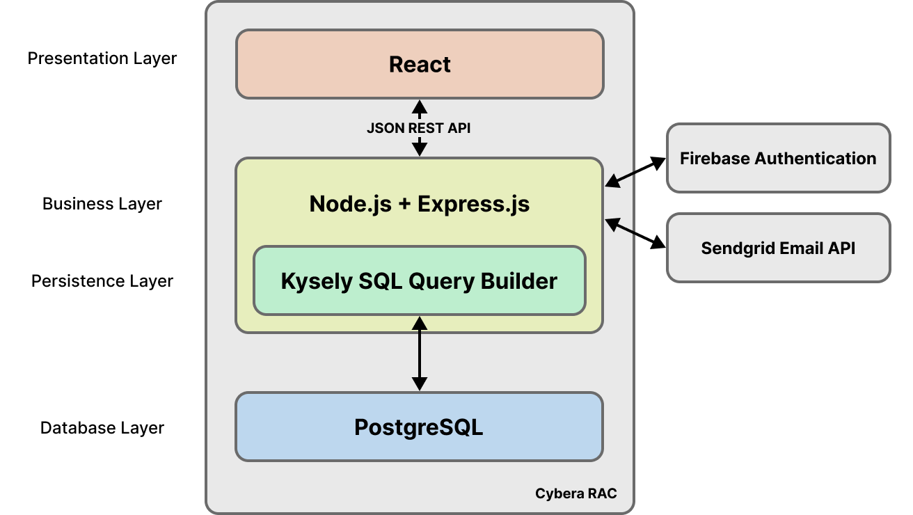
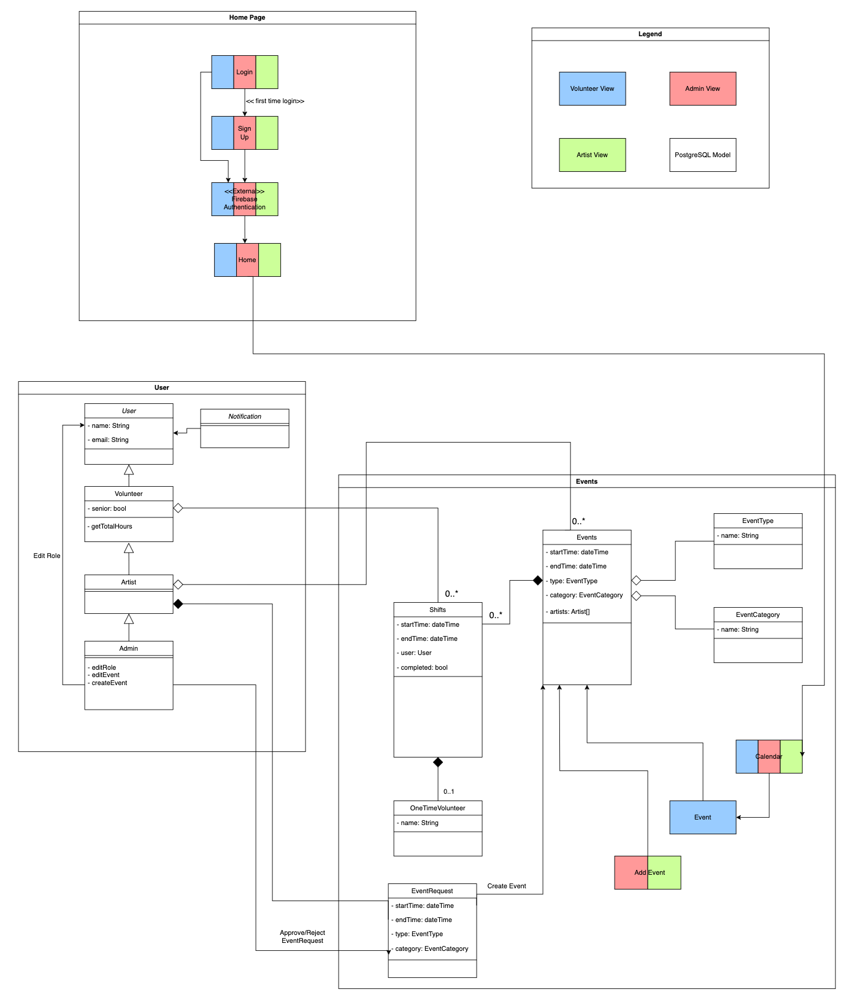
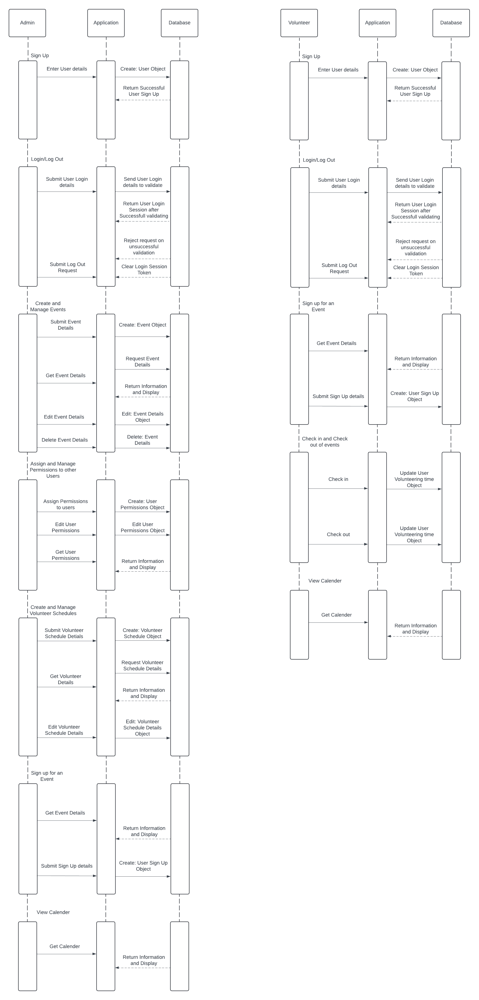
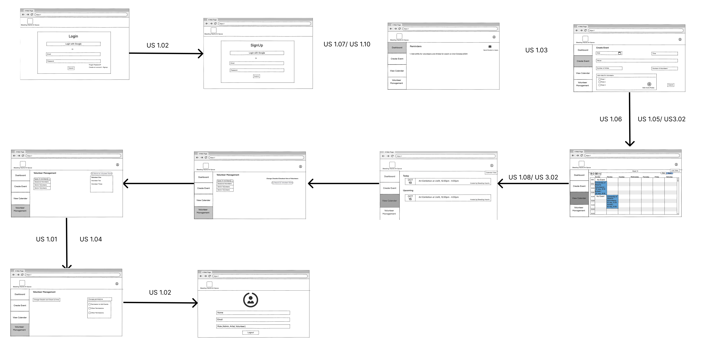
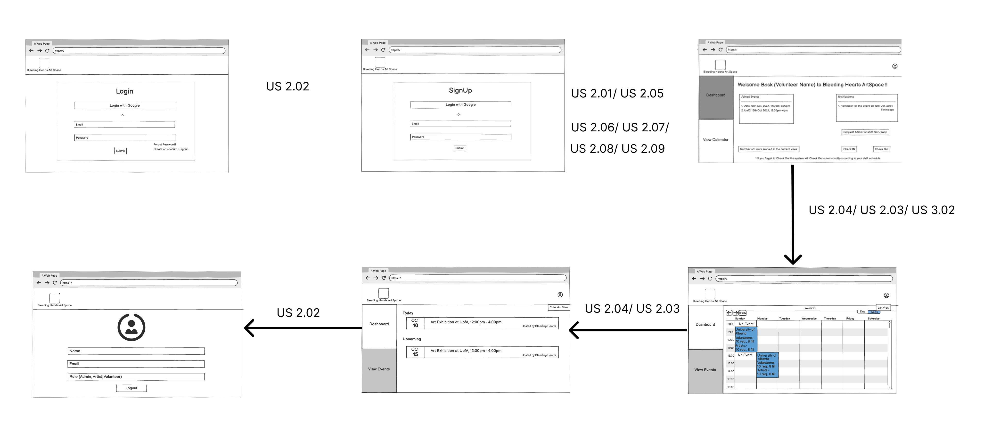
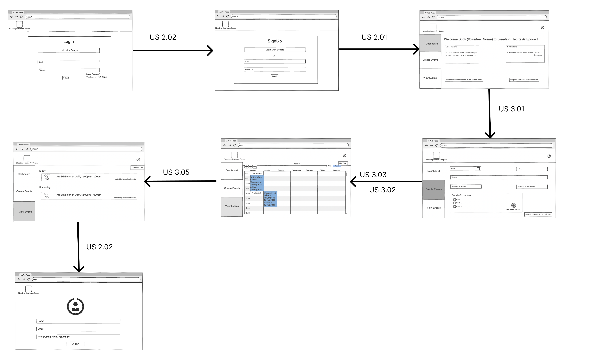

Software Design
This page includes a short description of the overall architecture style of the system, its high-level system components, and their logical (what data they exchange) and control (how they invoke each other) dependencies.
Architecture Diagram
The application uses a React frontend that communicates with an Express.js backend via a JSON REST API. The Express.js backend utilizes Kysely SQL builder to communicate with PostgreSQL for data management. The backend also uses Firebase Authentication for user authentication, and SendGrid for email functionality.

UML Class Diagram
The system revolves around Events, which contain Shifts. Users are the core entity, with specialized classes like Volunteer, Artist, and Admin inheriting from the base User class. Volunteers can sign up for Shifts, while Artists have additional capabilities, including the ability to request Events. Admins possess all permissions of Artists and can also manage user roles. This hierarchy represents a progressive increase in permissions and capabilities from Volunteers to Artists to Admins, with each level inheriting the abilities of the previous one and gaining additional functionalities.

Sequence Diagrams
Multiple sequence diagrams depicting the most important scenarios.

Low-Fidelity User Interface
This is the overall look and feel of the web app.
Admin UI

Volunteer UI

Artist UI
